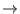

Next: Affixation Rules File Up: Dictionary Search Module Previous: Dictionary Search Module Contents
The form dictionary contais two required sections:
<IndexType> and <Entries>, and two optional sections:
<LemmaPreferences> and <PosPreferences>
Section <IndexType> conatins a single line, that may be either
DB_PREFTREE or DB_MAP. With DB_MAP the dictionary is
stored in a C++ STL map container. With DB_PREFTREE
it is stored in a prefix-tree structure.
Depending on the size of the dictionary and on the morphological
variation of the language, one structure may yield slightly better
access times than the other.
Optional sections <LemmaPreferences> and
<PosPreferences> contain a list of pairs of lemmas or PoS
tags, respectively.
The meaning of each pair is that the first element is prefereble to
the second in case the tagger can not decide between them and is asked to.
For instance, the section:
<LemmaPreferences>
salir salgar
</LemmaPreferences>
solves the ambiguity for Spanish word salgo, which may correspond to
indicative first person singular of verb salir (go out), or to exactly the
same tense of verb salgar (feed salt to cattle).
Since the PoS tag is the same for both lemmas, the tagger can not decide which is
the right one. This preference solves the dilemma in favour of salir (go out).
The section
<PosPreferences>
VMII3S0 VMII1S0
</PosPreferences>
helps solving cases as the past tense for Spanish verbs such as cantaba
(I/he sung), which are shared by first and third person.
In this case, if the tagger is not able to make a decision (it may be it doesn't
take into account the person as a feature), a preference is set for 3rd person
(which is more frequent in standard text).
Section <Entries> contains lines with one form per line.
Each form line has format: form lemma1 PoS1 lemma2 PoS2 ....
E.g.:
casa casa NCFS000 casar VMIP3S0 casar VMM02S0 backs back NNS back VBZLines corresponding to words that are contractions may have an alternative format if the contraction is to be splitted. The format is form form1+form2+... PoS1+PoS2+...
del de+el SP+DA
This line expresses that whenever the form del is found, it is replaced with two words: de and el. Each of the new two word forms are searched in the dictionary, and assigned any tag matching their correspondig tag in the third field. So, de will be assigned all tags starting with SP that this entry may have in the dictionary, and el will get any tag starting with DA.
Note that a contraction included in the dictionary cannot be splitted in two different ways corresponding to different forms (e.g. he's = he+is | he+has), so only a combination of forms and a combination of tags may appear in the dictionary.
Nevertheless, a set of tags may be specified for a given form, e.g.:
he'd he+'d PRP+VB/MD
This will produce two words: he with PRP analysis, and 'd with its analysis matching any of the two given tags (i.e. have_VBZ and would_MD). Note that this will work only if the form 'd is found in the dictionary with those possible analysis.
If all tags for one of the new forms are to be used, a wildcard may
be written as a tag. e.g.:
pal para+el SP+*
This will replace pal with two words, para with only its SP analysis, plus el with all its possible tags.
The contraction entries in the dictionary are intended for inambiguous contractions, or for cases such that it is not worth (or it is too difficult) to handle otherwise. For splitting more sophisticated compound words, such as verb clitic pronouns in Spanish or Italian (e.g dale  dar+él), derivation (e.g. quick quickly, rápida rápidamente), diminutive/augmentative sufixes, prefixes, or other similar behaviours, the affixation module should be used (see section 3.9.2 for details).
An optional parameter in the constructor enables to control whether contractions are splitted by the dictionary module itself (thus passing two words instead of one to later modules) or the decision is left to later modules (which will receive a single word carrying retokenization information).